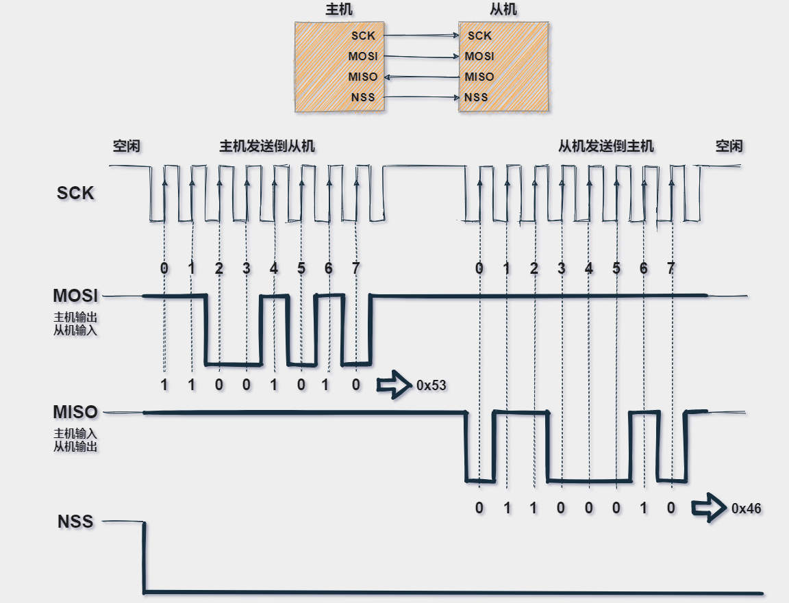
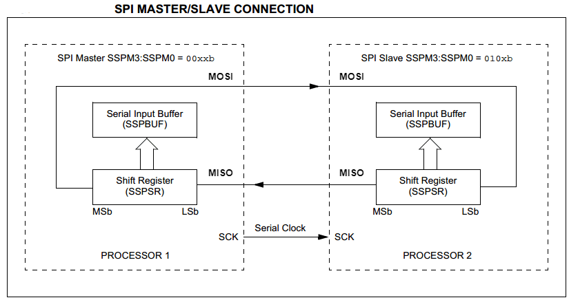
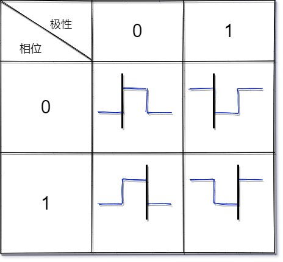
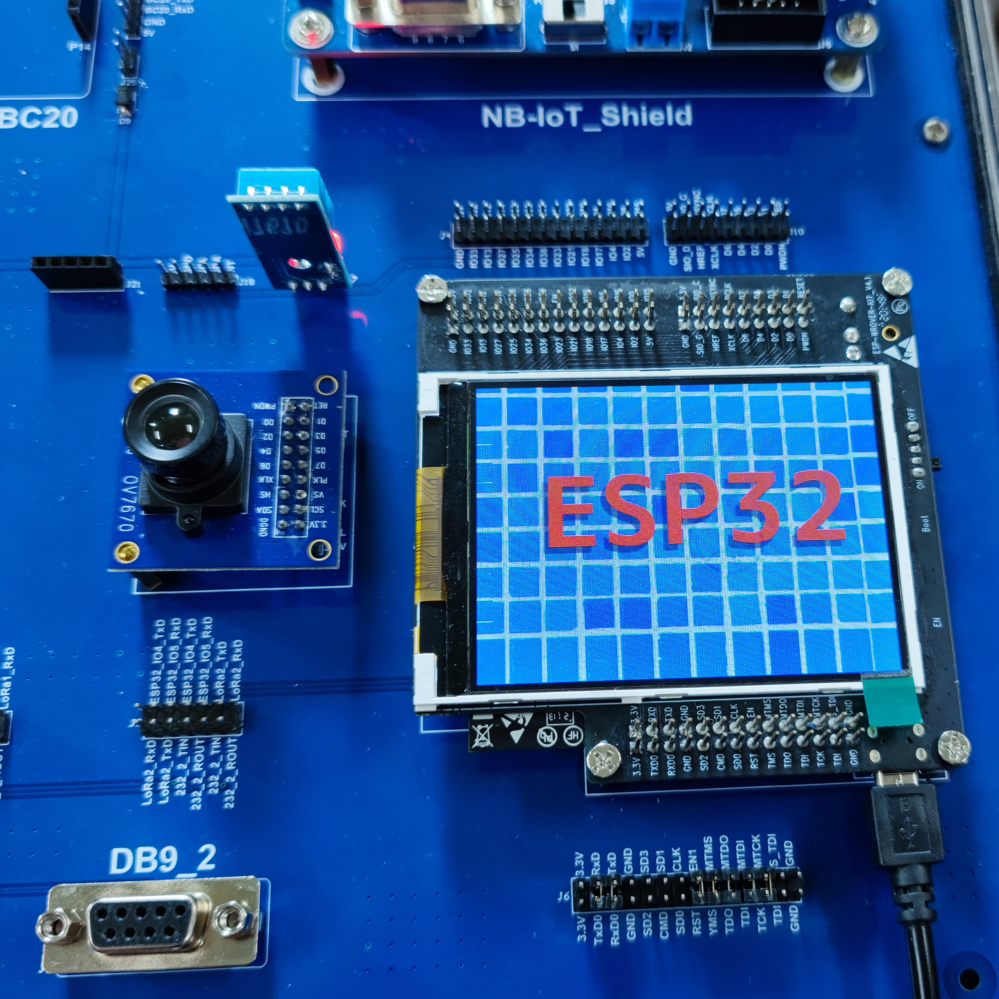

LCD&SPI#
实验目的#
本实验主要完成以下两个目的：
学习 ESP32 的 SPI 接口 API 使用
完成具备 SPI 接口的 LCD 的图片显示
SPI 相关知识#
SPI 是串行外设接口（Serial Peripheral Interface）的缩写，是一种高速的，全双工，同步的通信总线。
特点#
SPI 是一个同步的数据总线，也就是说它是用单独的数据线和一个单独的时钟信号来保证发送端和接收端的完美同步。
时钟是一个振荡信号，它告诉接收端在确切的时机对数据线上的信号进行采样。
产生时钟的一侧称为主机，另一侧称为从机。总是只有一个主机（一般来说可以是微控制器/MCU），但是可以有多个从机（后面详细介绍）；
数据的采集时机可能是时钟信号的上升沿（从低到高）或下降沿（从高到低）。
具体要看对 SPI 的配置；
整体的传输大概可以分为以下几个过程：
主机先将 NSS 信号拉低，这样保证开始接收数据；
当接收端检测到时钟的边沿信号时，它将立即读取数据线上的信号，这样就得到了一位数据（1bit）;
由于时钟是随数据一起发送的，因此指定数据的传输速度并不重要，尽管设备将具有可以运行的最高速度（稍后我们将讨论选择合适的时钟边沿和速度）。
主机发送到从机时：主机产生相应的时钟信号，然后数据一位一位地将从 MOSI 信号线上进行发送到从机；
主机接收从机数据：如果从机需要将数据发送回主机，则主机将继续生成预定数量的时钟信号，并且从机会将数据通过 MISO 信号线发送；
具体如下图所示：

❗ 注意
SPI 是“全双工”（具有单独的发送和接收线路），因此可以在同一时间发送和接收数据，另外 SPI 的接收硬件可以是一个简单的移位寄存器。这比异步串行通信所需的完整 UART 要简单得多，并且更加便宜；
SPI 特性#
SPI 总线包括 4 条逻辑线，定义如下：
MISO：Master input slave output 主机输入，从机输出（数据来自从机）；
MOSI：Master output slave input 主机输出，从机输入（数据来自主机）；
SCLK ：Serial Clock 串行时钟信号，由主机产生发送给从机；
SS：Slave Select 片选信号，由主机发送，以控制与哪个从机通信，通常是低电平有效信号。
其他制造商可能会遵循其他命名规则，但是最终他们指的相同的含义。以下是一些常用术语；
MISO 也可以是 SIMO，DOUT，DO，SDO 或 SO（在主机端）;
MOSI 也可以是 SOMI，DIN，DI，SDI 或 SI（在主机端）;
NSS 也可以是 CE，CS 或 SSEL;
SCLK 也可以是 SCK;
本文将按照以下命名进行讲解[MISO, MOSI, SCK，NSS]
下图显示了单个主机和单个从机之间的典型 SPI 连接。

时钟频率#
SPI 总线上的主机必须在通信开始时候配置并生成相应的时钟信号。在每个 SPI 时钟周期内，都会发生全双工数据传输。
主机在 MOSI 线上发送一位数据，从机读取它，而从机在 MISO 线上发送一位数据，主机读取它。
就算只进行单向的数据传输，也要保持这样的顺序。这就意味着无论接收任何数据，必须实际发送一些东西！在这种情况下，我们称其为虚拟数据；
从理论上讲，只要实际可行，时钟速率就可以是您想要的任何速率，当然这个速率受限于每个系统能提供多大的系统时钟频率，以及最大的 SPI 传输速率。
时钟极性 CKP/Clock Polarity#
除了配置串行时钟速率（频率）外，SPI 主设备还需要配置时钟极性。
根据硬件制造商的命名规则不同，时钟极性通常写为 CKP 或 CPOL。时钟极性和相位共同决定读取数据的方式，比如信号上升沿读取数据还是信号下降沿读取数据；
CKP 可以配置为 1 或 0。这意味着您可以根据需要将时钟的默认状态（IDLE）设置为高或低。极性反转可以通过简单的逻辑逆变器实现。您必须参考设备的数据手册才能正确设置 CKP 和 CKE。
CKP = 0：时钟空闲 IDLE 为低电平 0；
CKP = 1：时钟空闲 IDLE 为高电平 1；
时钟相位 CKE /Clock Phase (Edge)#
除配置串行时钟速率和极性外，SPI 主设备还应配置时钟相位（或边沿）。根据硬件制造商的不同，时钟相位通常写为 CKE 或 CPHA；
顾名思义，时钟相位/边沿，也就是采集数据时是在时钟信号的具体相位或者边沿；
CKE = 0：在时钟信号 SCK 的第一个跳变沿采样；
CKE = 1：在时钟信号 SCK 的第二个跳变沿采样；
时钟配置总结#
综上几种情况，下图总结了所有时钟配置组合，并突出显示了实际采样数据的时刻；
其中黑色线为采样数据的时刻；
蓝色线为 SCK 时钟信号；
具体如下图所示；

实验内容#
本实验的内容是解码 jpeg 图像并将其显示在具备 SPI 接口的 LCD 上，图片位于 main 文件夹中。
LCD 硬件#
实验箱的 esp32 开发板 ESP-WROVER-KIT 上，已经附带有一块 LCD 屏幕 ILI9341。
LCD 与 ESP-WROVER-KIT 管脚连接情况
ESP32 管脚 |
LCD 信号 |
|---|---|
GPIO18 |
复位 |
GPIO19 |
SCL |
GPIO21 |
D/C |
GPIO22 |
CS |
GPIO23 |
SDA |
GPIO25 |
SDO |
GPIO5 |
背光 |
源代码#
参见参考资料与源代码
具体函数作用参考代码注释，想要了解 ESP32 的 SPI 驱动更多以及更深入的话可以前往乐鑫官方文档，以下为链接：
本实验中无需再去menuconfig中配置，默认引脚设置就是为 ESP-WROVER-KIT 服务的，具体请检查 main.c 代码内如下定义：
#define EXAMPLE_LCD_PIXEL_CLOCK_HZ (10 * 1000 * 1000)
#define EXAMPLE_LCD_BK_LIGHT_ON_LEVEL 0
#define EXAMPLE_LCD_BK_LIGHT_OFF_LEVEL !EXAMPLE_LCD_BK_LIGHT_ON_LEVEL
#define EXAMPLE_PIN_NUM_DATA0 23 /*!< for 1-line SPI, this also refered as MOSI */
#define EXAMPLE_PIN_NUM_PCLK 19
#define EXAMPLE_PIN_NUM_CS 22
#define EXAMPLE_PIN_NUM_DC 21
#define EXAMPLE_PIN_NUM_RST 18
#define EXAMPLE_PIN_NUM_BK_LIGHT 5
编码调试与示例输出#
使用 idf.py 以及 clion 管理项目，编码，build, flash。
完成后，您将看到 LCD 中显示如下画面：
